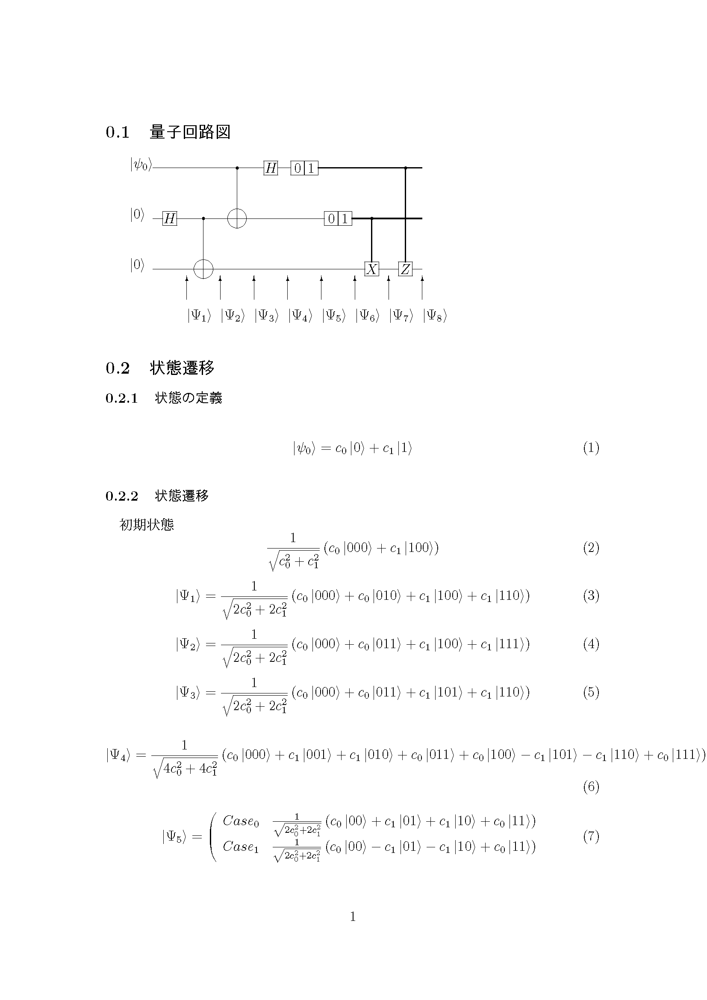

量子コンピュータの簡単なシミュレータです。レポート作成を目的としています。
c2texは、アセンブリ風の量子回路の記述から、量子回路図、量子回路の振る舞いのシミュレーションを行うものです。
レポート用のtexファイルを作成します。
独自実装の文字式演算アルゴリズムを搭載しています。
想定しているいくつかの量子回路が正常に動作することを目的として制作されています。そのためいくつか問題のある実装も目立ちます。
perl qc.pl in.txt > out.texの様に使ってください。
/sample/内には他のサンプルコードもいくつか存在します。
test.sh・test.batにより多少作業を自動化できます。

#サンプル用量子回路。
#ここでは、このプログラムでの量子回路の記述方法を説明します。
#まず、基本的な事として、命令やUNDEF等は大文字のみです。小文字だと認識しません。
#から始まる行はコメントとして無視されます。
DEF 0 0
DEF 1 1
DEF 2 0
#ここでは量子ビットを定義しています。古典量子ビットを定義する方法は用意されていません。
#文法は
#DEF (ビット名) (初期値)
#です。
#ビット名は任意の英数文字列で名前を設定出来ます。
#初期値は0、1、UNDEFのみです。UNDEFの場合は適宜文字が割り当てられます。
HGATE 0
#?GATE(?は、任意の英字です。あらかじめHXYZは定義されています。)はユニタリゲートです。文法は
#?GATE (適用先ビット名)
#です。
CNOT 1 0
#CNOTは見ての通りCNOTゲートです。文法は、
#CNOT (制御ビット名) (適用先ビット名)
#です。
#CXGATE 1 0
#未実装の制御ユニタリゲートです。認識しますが正常動作しません。文法は
#C?GATE (適用先ビット名) (制御ビット名)
#です。実装が面倒なのは分母なしで定義されているユニタリ行列を適用した時に、適用されていないビットにその分母に当たる数を乗算するのが大変だからです。
#つまり、自乗の和のルートを扱えないために起こる問題です。
#今回の実装ではオブジェクト指向を用いず、文字列で式を表現しているために起こる問題です。
OBS 1
#古典測定ゲートです。
#この時点でビット1は量子ビットから古典ビットになります。
#内部ではビットは番号によって管理されています。
#この命令により量子ビットのリストからビット「1」は削除され、新たに古典ビットにビット「1」が追加されます。
#古典ビットには量子ビット向けの命令は適用されません。ただし、誤って適用してもエラーが出ない可能性もあります。
#誤った場合は量子回路図を見れば分かるので、訂正は簡単です。
#OBS命令を適用後は、Case毎にどの値を観測した場合かによって複数の場合に対応する結果が出力されます。
#先にOBS命令を適用した法がCase_01等で後に(今回は1)表示されます。
OBS 2
CCZGATE 1 0
#古典制御ユニタリゲートです。文法は
#CC?GATE (制御ビット名) (適用先ビット名)
#です。当然制御ビットは古典ビット、適用先ビットは量子ビットである必要があります。
BFE 0
IFE 0
#BFEはビットフリップエラーで、IFEは位相フリップエラーです。文法は、
#BFE (適用先ビット名)、IFE (適用先ビット名)
#です。
AND 1 1 2
OR 1 1 2
NOT 1 2
#古典ビットに対するAND、OR、NOT演算です。文法は、
#AND (出力先ビット名) (演算用ビット1) (演算用ビット2)
#OR (出力先ビット名) (演算用ビット1) (演算用ビット2)
#NOT (出力先ビット名) (演算用ビット1)
#です。ただし、古典ビットを定義する手段は用意されていないので、どうしても古典ビットが足りない場合は、DEFの後OBSをしてください。
#複雑な演算は想定されていません。複雑な演算を行った場合、結果の表示が複雑になり混乱を来すからです。
#また、古典ビットの計算結果毎にパターン分けを行い計算している事から、ライン数が増える事が即計算量の増大に繋がるのも問題です。
#古典ビットの分岐はサポートしていませんが、出力先ビットが演算用ビットと異なるので問題ありません。
SET A 1 1 1 -1
#行列の定義はSETでできます。ここでは行列Aにアダマール行列を代入しています。
#SETはどこに書いても構いません。最初に読みとられます。
#また、定義可能なのは現在整数のみです。計算自体は文字列演算をサポートしていますが、テストが不十分のため制限しています。文法は
#SET (定義する行列名。英大文字推奨) ((1,1)要素) ((1,2)要素) ((2,1)要素) ((2,2)要素)
#です。分母の設定は不要です。計算後に分母は計算されます。
#実際には実現不可能な値も設定出来る可能性があります。
AGATE 0
Active Perl等Perl5の実行環境。 Platex等texコンパイル環境。